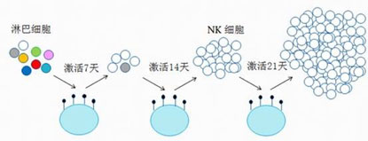

越来越多的人更加关注生活质量和健康。为了纪念《世界卫生组织组织法》批准日，第一届世界卫生大会决定，每年10月13日为“世界保健日”。借此，中赢细胞银行提醒您：在癌症几乎成为一种常见病与多发病的今天，愿您关注生活，关爱健康。祝愿大家都有一个健康的体魄，远离疾病，远离癌症，充实七彩生活，更好地去享受美丽的人生。
打针防癌不是神话，是科学！
中赢细胞银行国际专家团队首席科学家，美国杨百翰大学生物化学博士徐以兵发现，当人体中衰老、病变的细胞增多时，人体也会呈现出老态和病态；当体内癌细胞大量增多时，人体则会产生癌症，甚至死亡。癌症的种类虽然很多，但发病原理都是由于正常细胞癌变后无限制地增生引起的，因此只要消灭抑制癌细胞的生成与扩散就可以预防癌症了。
研究发现，NK细胞对于癌变、衰老细胞，病毒等的杀伤力非常强。年轻健康的人体内，NK细胞的数量非常多，细胞活性也很强。但随着年龄的增长，这种NK细胞的数量与活性都会降低，此时，免疫系统功能也会随之下降，人体在这个时候最容易发生疾病，甚至罹患癌症。这意味着，只要我们保证体内存在充足的，且活性较强的NK细胞，也就是说，只要我们定期向体内回输NK细胞，就可以轻松预防癌症了。
NK细胞的扩增原理是什么？
那么，如何保证体内NK细胞的数量与活性呢？2008年，中赢细胞银行在美国组建了由哈佛医学院、南加州大学等多位专家学者组成的国际科研团队，经过八年的研究，他们终于取得了NK细胞定向扩增国际技术专利。
IL-21跨膜NK细胞体外定向扩增活化技术，可以使NK细胞在短期内扩增到万倍以上，纯度达到90%以上，活性及杀伤率提高到80%以上。

IL-21跨膜NK细胞体外定向扩增活化技术扩增过程
扩增完毕后，NK细胞会保存在零下196摄氏度的液氮柜里，等到需要的时候，就把它们回输到我们体内，它们就可以迅速、有效的杀死我们体内衰老、癌变、病变的细胞了。而且这些细胞非常安全，它和人体自身的NK细胞一样，只会对有害细胞等异物进行杀伤和清除，不会伤害自身健康的细胞，这是被医学界公认的。而且它们跟人体自身的NK细胞一样，也是有寿命的，会自然代谢被排除体外，人体的免疫系统会继续照常工作，也不会因此产生依赖性。
去哪儿注射NK细胞？
现在，中赢细胞银行的IL-21跨膜NK细胞体外定向扩增活化技术已经分别获得了全球和国内的发明专利，到中赢细胞银行打NK细胞针来防癌，已经成为众多防癌手段中的一种潮流。这是因为NK细胞不仅具备专业的防癌功功能，同时还兼具抗衰老、提升免疫力的功效，而且十分安全。